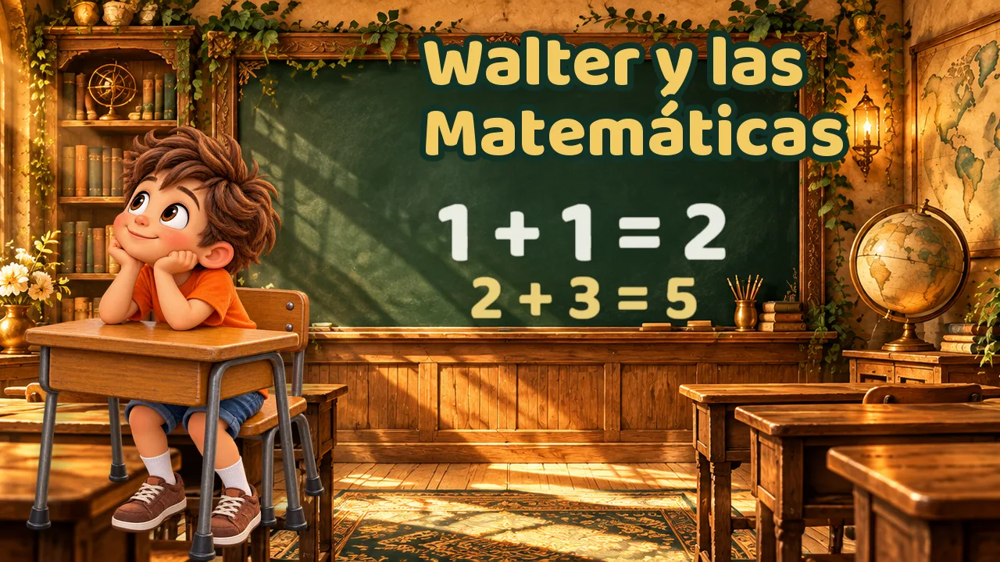
Walter y las Matemáticas
Contar, sumar y volver a intentar
Programa musical educativo · 3 a 6 años
Cada canción de Walter abre un libro mágico. Tu salón recibe el video, una guía para la maestra y una hoja de actividades, listos para usar en 15 minutos.
Demo gratis
Lo que hace único a Walter
Los niños no solo ven un video: siguen una historia que vuelve en cada clase.
Cada mundo nace de la página: un dibujo en tinta que se llena de color, una nave de papel, una leyenda pop-up.
Un niño curioso y una mariposa monarca que lo guía. Los mismos amigos en cada canción.
Al final, el libro guarda un tesoro prensado. Los niños lo esperan y lo dibujan en su propio Herbario.
El Herbario de Walter
Del video: Walter y las Clases de Historia
Cada canción termina cuando el libro guarda un tesoro prensado. Los niños lo esperan y lo dibujan en su propio Herbario.
Volumen 4 · 7 canciones

Contar, sumar y volver a intentar
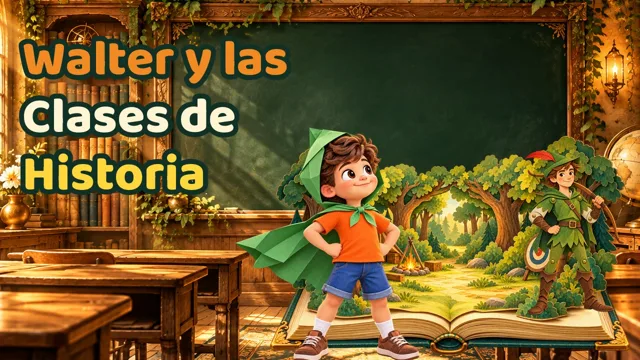
Escuchar, valentía y bondad
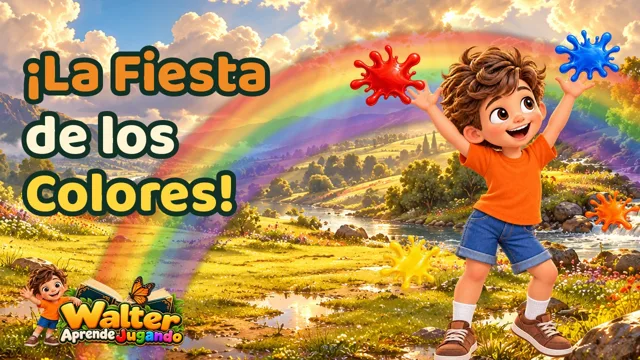
Seis colores y el arcoíris
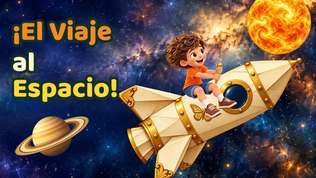
El Sol y los planetas
Partes del árbol y cuidar la tierra
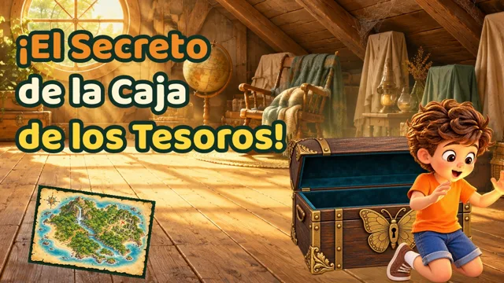
Curiosidad y seguir un camino
Autoestima y emociones
Kit educativo · Volumen 4
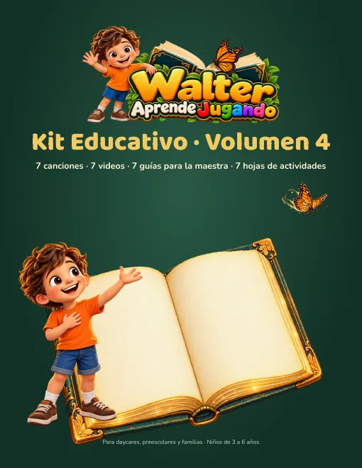
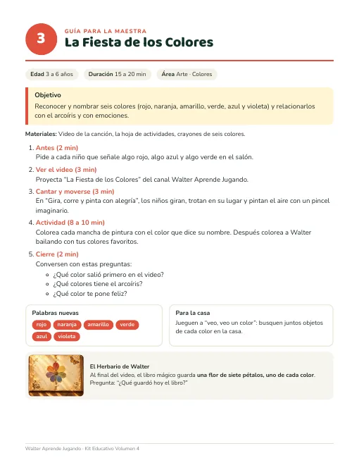
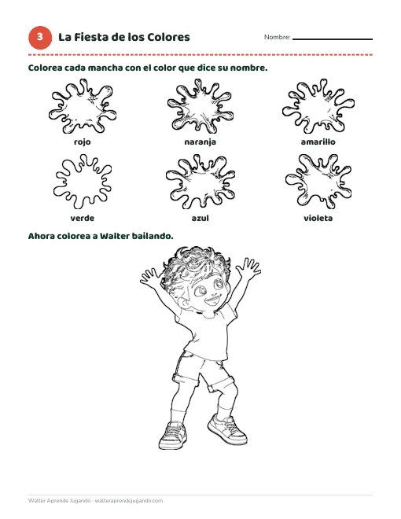
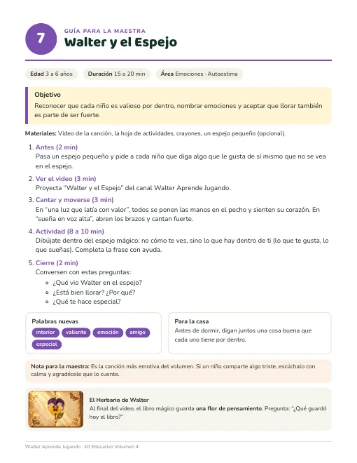
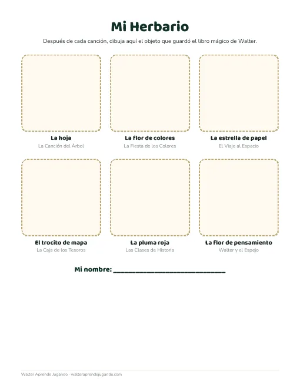
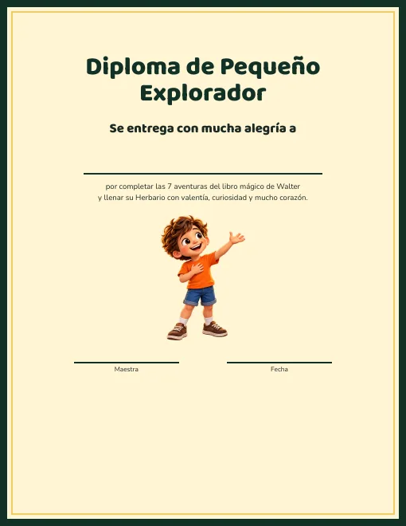
Cómo es una clase
Conecta el tema con los niños.
El libro mágico se abre.
Movimientos sencillos para cada coro.
8 a 10 minutos con la hoja imprimible.
Preguntas y el tesoro del Herbario.
Muestra gratis
Te enviamos la demo, una guía para la maestra, una hoja de actividades, el Herbario y el diploma. Y te avisamos cuando salga una canción nueva.
Precios
Pago por Zelle (te enviamos los datos por WhatsApp). Si tu centro necesita pagar con tarjeta o con factura, también aceptamos PayPal. Te enviamos el kit por correo o Google Drive.
Para familias
Listas para cada momento del día, con Walter y otras canciones que los niños aman. Guárdalas y ponlas en el carro, en el desayuno o antes de dormir.
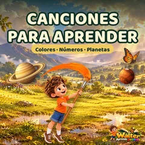
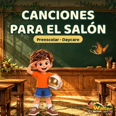
Preguntas
Para niños de 3 a 6 años, en daycares, preescolares y en casa.
No. Cada guía te dice qué decir y qué hacer, paso a paso. Solo proyectas el video e imprimes la hoja.
Sí, para los niños de tu salón, todas las veces que necesites.
Las canciones están en español, ideales para aulas hispanas y bilingües. Las guías están en español.
El kit es para un salón. Para todo el centro, elige la licencia anual.
Escríbenos y te enviamos la muestra gratis y respondemos tus preguntas.
WhatsApp 786-354-8796 · wperezmedero@gmail.com